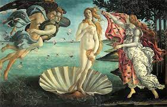
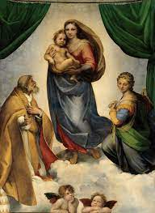
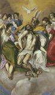

| Artistas |
Caracteristicas |
Pintura Destacada |
Vista Previa |
| Frangelico |
Utiliza colores decoristas y brillantes para representar muy bien los sentimientos espirituales.Supone la idea de integrar un humanismo cristiano (quiere recuperarlo por el peligro de paganismo que traen los nuevos vientos del Renacimiento) con las características artísticas del siglo XV. Por tanto, se considera su obra un intento de armonizar lo religioso medieval con la nueva estética renacentista italiana. |
La Anunciación |
 |
| Botticelli |
La mayor parte de su vida se dedicó a hacer retratos.
Tuvo gran influencia por parte del neoplatonismo, tenía preferencia para pintar temas religiosos, trabajó ayudando a pintar la Capilla Sixtina del Vaticano, se basó en plasmar temas mitológicos, su tono era muy lírico y sus personajes tenían sonrisas melancólicas. |
El Nacimiento de Venus |
 |
| Rafael |
Se preocupa por el espacio dentro de la pintura, lo que lo lleva a crear un ambiente que engloba todas las figuras que se encuentran entre sí, llevando el tema de la perspectiva a otro nivel en cada una de sus escenas, evocando una sutileza en la calidad del trazo.
El enfoque del pintor hacia los temas religiosos es de simple notar, de carácter narrativo o secuencial representa escenas de los textos evangélicos, contemplando la figura de Cristo, apóstoles, discípulos y personajes mágicos religiosos. Se trata de un directo y fuerte acercamiento a la cosmovisión de la época. |
Madonna Sixtina |
 |
| Alberto Durero |
Los grabados de Durero, son de factura impecable, y de un realismo asombroso, ello le valió para trabajar para la monarquía y la iglesia desde muy joven.
A parte de los grabados, también produjo cuadros al óleo durante toda su carrera, en los cuales se aprecia su gran habilidad artística, hoy en día son considerados paradigmas del renacimiento europeo. No se conformó con plasmar figuras en las telas, sino que realizó un aporte conceptual y técnico de gran riqueza, a la pintura y la simbología religiosa. |
La Adoracion de los Magos |
 |
| Doménico Theotocopoulos (El Greco) |
Sus figuras son exageradamente alargadas, delgadas y con grandes paños flotando a su alrededor, por influencia su fuerte manierismo, lo que además imprime en ellas una mayor espiritualidad; otra peculiaridad de sus modelos es su gran expresividad y misticismo, llegándose a decir que los buscaba en los manicomios toledanos; sus composiciones también son manieristas, en ellas falta el espacio, las figuras aparecen recargadas hacia una de las zonas del lienzo, parecen ser impulsadas hacia lo alto; los fondos en muchas de sus obras son inexistentes, en otras son paisajes con luz de tormenta o la ciudad de Toledo entre brumas; los colores dominantes pasan de la gama cálida inicial al dominio cada vez mayor de los más fríos e irreales, acentuando así las visiones místicas que caracterizan su obra; su técnica es libre y abocetada; etc. |
La Trinidad |
 |